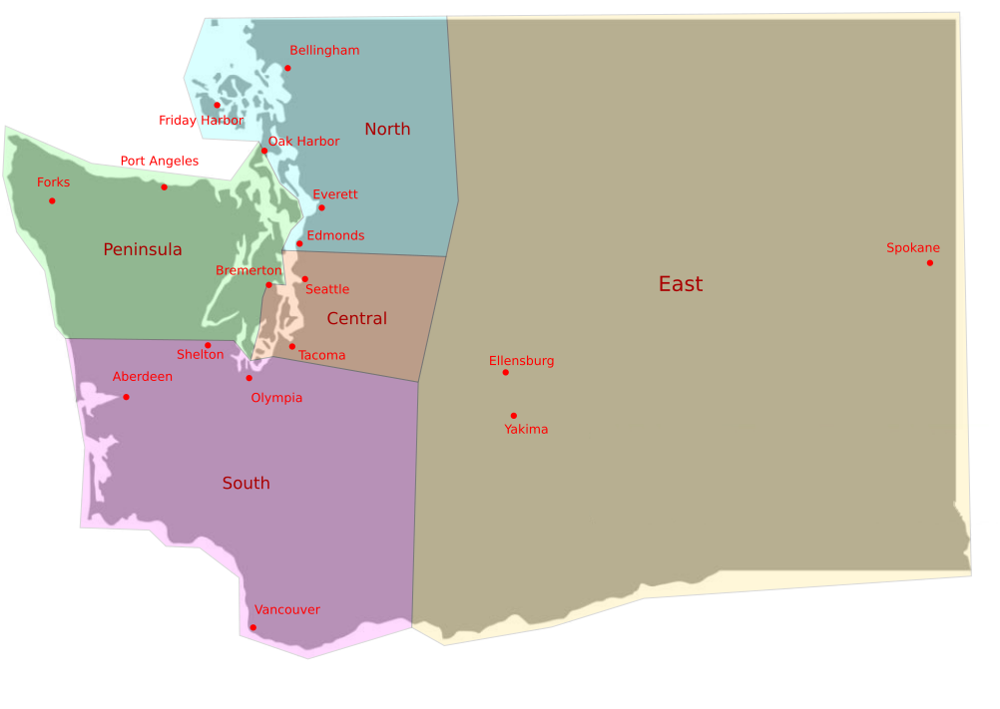

The Puget Sound chapter of the SRA is an organization focused on firearms education among comrades. We have some excellent instructors who run classes at many different levels of firearms familiarity all over Washington. We also have free-form range days, as well as occasional social events and an active Discord. Finally, we also have members who regularly attend competitions to test their training against difficult shooting challenges, and help other interested members get into competitive shooting.
What we DON'T do as an org is organize any kind of direct action, protesting as a group, or ever show up to events armed. We also don't generally do mutual aid or community outreach that isn't firearms education related. We don't have prohibitions on our members doing those things (joining the Discord is a great way to meet comrades in your area, and we try to help connect members with other orgs who do focus on mutual aid), but the organization does not take part. (We say this up front because some people come to us looking for that kind of activity).
You can join as a "local comrade" to the Puget Sound chapter by sending a donation of $25 as your first year's dues to $PSSRA on CashApp and then follow up with an email to PSSRA@protonmail.com with the subject line [local comrade dues]. Let us know your cashapp username and region (see region map below) in the body of the email. (Note: please use a CashApp account that doesn't have personal information in the display name or username - we can see who has sent us money, and if that contains your legal name we'd just rather not have that data.) If you choose to join as a local-only comrade, you will be added to a vetting Discord after the dues and email are recieved.
Alternatively, you can join the National SRA at a minimum of $36/year through the national site. At some point after joining, you will be sent an email that lets you sign up for the forums. Once you're signed up, you can message your discord handle and region to our treasurer through the forum at https://talk.socialistra.org/u/pastoral.shackle/ and they will add you to our local vetting Discord. Please bear in mind it can take up to two months to get the National SRA part of the process squared away before the local process starts.
National members get to vote on all chapter positions, while local comrades only vote on local positions and are not members of the National SRA.
Once you are added to the vetting discord, we have vetting events every few weeks where we take some time to meet all the new people before they’re “full” members of our chapter. It’s pretty relaxed, but since we’re a gun org we do want to have the chance to meet everyone first.
If you have any questions or want to talk more before joining, don't hesitate to email us at PSSRA@protonmail.com and we will respond as quickly as possible.
